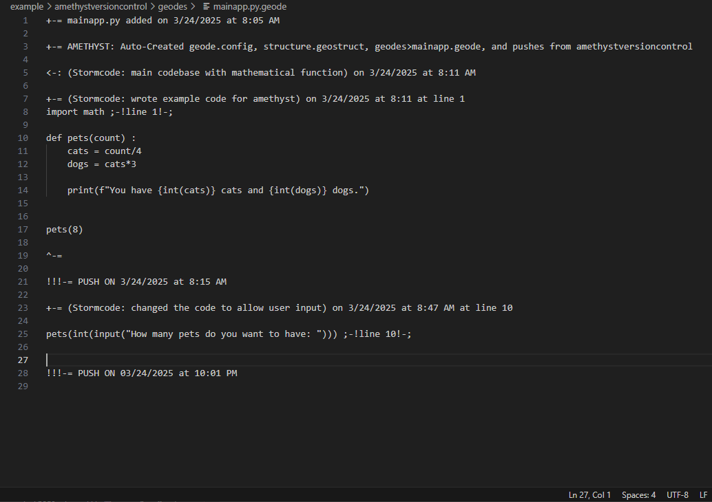
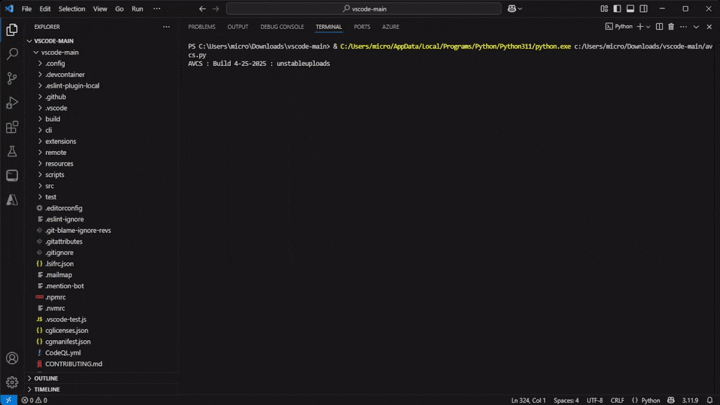

Version Control
Blissfully track file changes to your codebase. Easy to manipulate, erase, modify, and adapt to your liking.

Fast at what it does
Very speedy, with capabilitites of beating leading VCS systems like Git. In the shown example, Amethyst sets up all required files, checksums and hashes the files, all in 7 seconds. (Ryzen 7 7700X with 32GB Ram JEDEC Format)

Easily Reverse Changes
Rewind what you did with simplicity, with undo reversing your latest action, and rollback returning you to your last push.

Simple Setup
Amethyst is designed to be easy, with next to no effort on your end. The first command you use sets up your repo for Amethyst.